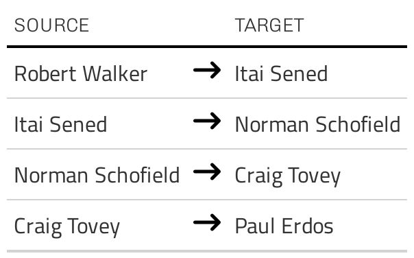
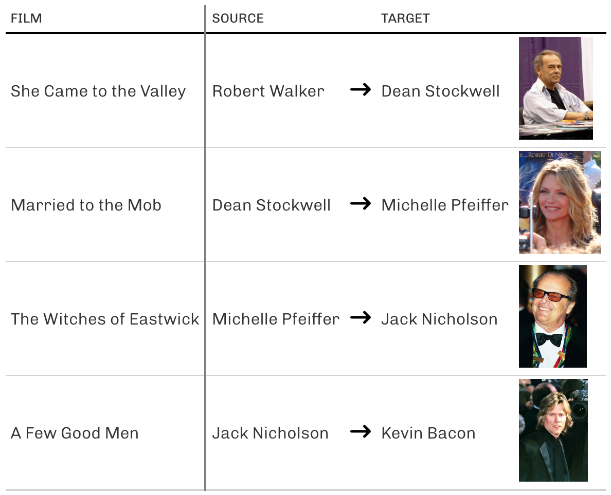

Robert W. Walker, Ph. D.

Robert W. Walker is an Associate Professor of Quantitative Methods in the Atkinson Graduate School of Management at Willamette University
He earned a Ph. D. in political science from the University of Rochester in 2005 and has previously held teaching positions at Dartmouth College, Rice University, Texas A&M University, and Washington University in Saint Louis. His current research develops and applies semi-Markov processes to time-series, cross-section data in international relations and international/comparative political economy. He teaches courses in quantitative methods/applied statistics and microeconomic strategy and previously taught four iterations in the U. S. National Science Foundation funded Empirical Implications of Theoretical Models sequence at Washington University in Saint Louis. His work with Curt Signorino and Muhammet Bas was awarded the Miller Prize for the best article in Political Analysis in 2009.
His web presence is rww.science and his github is https://github.com/robertwwalker
Robert’s Erdos-Bacon Number is 8.

